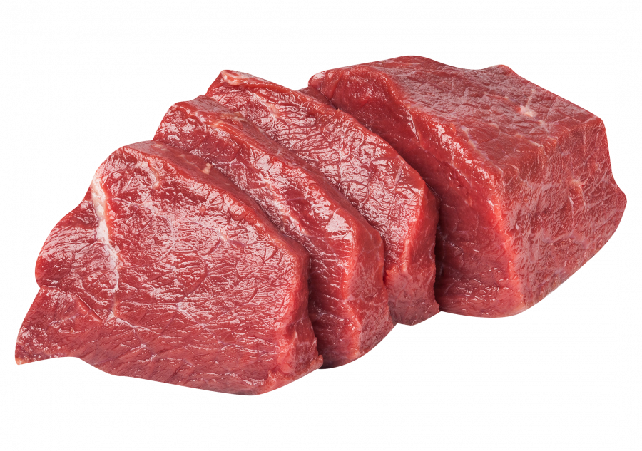

Польза мяса
Самая главная польза мяса заключается в повышенном содержании в нем белка. Белок – это самый главный строительный материал для клеток и органов человеческого тела. Также в мясе содержится большое количество витаминов и минералов, ценных аминокислот (в том числе незаменимых), жиров. В мясной продукции много железа, а этот элемент крайне важен в процессе кровообращения.